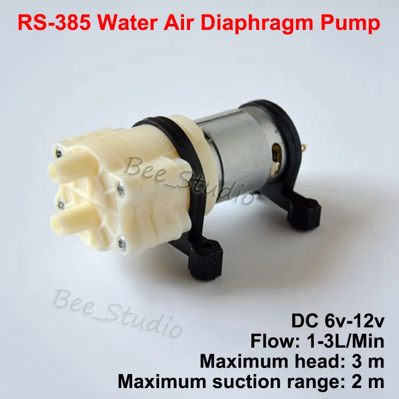
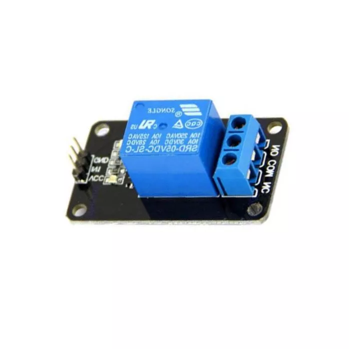

Build A Home Irrigation System
Budget-Friendly Automated Irrigation System!
An automated irrigation system in a water-challenged environment
A creation that ensures your home plants stay hydrated, regardless of an existing direct water connection.
Motivation for setting up this system
A few years back, I was very into gardening, specifically Super hot peppers, It was a great hobby, and I learned allot about plants.
I grow a variety of vegetables and even started the first Israeli Pepper Growers Community (which btw is still active today).
I then moved to a new apartment, that had a smaller balcony and no direct water source.
If you want to get a pepper plant to grow to 1.5 meter height, you need (among other requirements) to water it regularly. So I had to manually do it, and it quickly became time-consuming, not very efficient and unsustainable if I wanted to travel for a few days.
I decided to build an automated irrigation system that would water the plants on the balcony without any manual intervention.
General system description:
We are going to use a simple microcontroller to activate a water pump, the water pump will pump water from a water container, the size of the water container is up to you, just make sure it can hold enough water for a few days for all the connected plants.
I had 2- 20 liter water containers, but its really up to you, your irrigation needs and budget.
I also connected droppers to control the amount each plant gets per activation.
The system could supply water for 5-7 days (depending on weather), without a refill.
What you need:
- Arduino Uno board
An amazing low-cost microcontroller.
- 12V water pump
I used droppers, so 1-fL/Min pump was enough.
12V water pump I used - 5V Relay

5V relay - 12V charger
- 9V charger
- Connectors and cables
How to assemble
You can purchase these ingridients for under 20$ and for a more detailed view of connectors and pins, as well as the C++ source code to load, check out my github repository
Final Thoughts:
Building this system was a great experience, I learned a lot about microcontrollers, water pumps, and droppers.
I also learned that building a system that works is not enough, you need to make sure it is reliable and easy to maintain.
I hope this post will inspire you to build your own system, and if you do, please share it with me, I would love to see it!